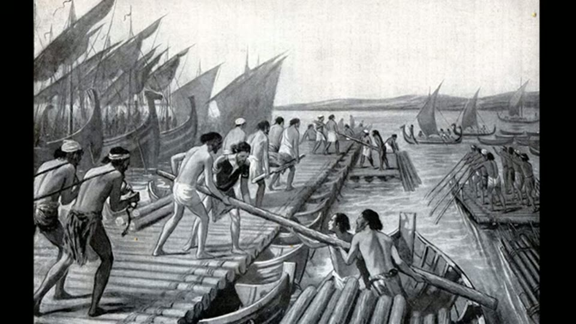
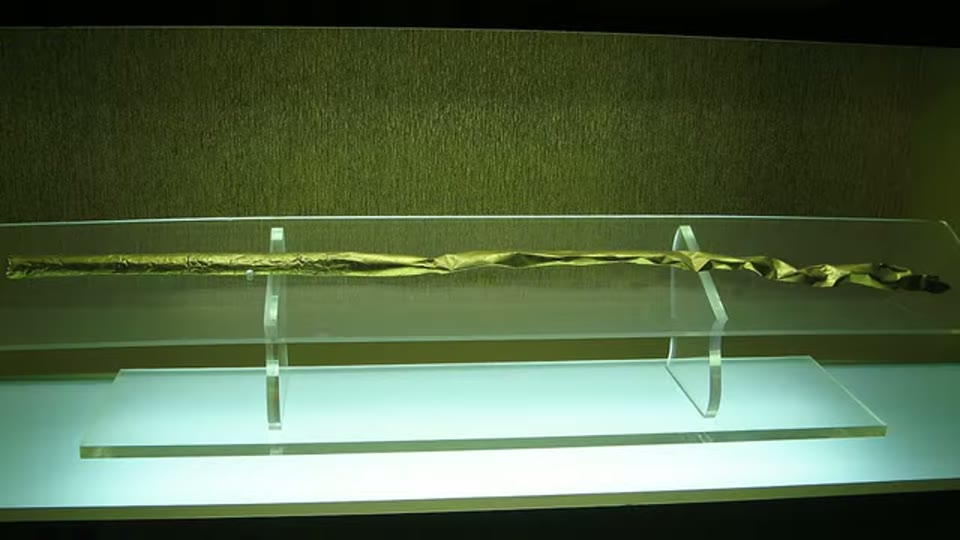

Curious Being
Lost Civilization: The Mystery of Sanxingdui & Chinese Metallurgy
Tina · 20 min · watch on YouTube · summarised 2026-08-24
Sanxingdui, in the Sichuan basin, is a Bronze Age site of about 3.5 square kilometres. In 1986 two pits were opened containing thousands of objects in gold, bronze and jade along with ivory tusks and pottery, most of them broken and some scorched, which the excavators read as ritual offerings. Radiocarbon on organic material in the layers that hold the bronzes — phases II and III — places them between about 2100 and 1200 BC 00:24–01:42.
The objects themselves are what draw attention. Bronze trees four metres tall. The largest and best-preserved standing bronze human figure known, 2.6 m. Masks with square faces, almond eyes and straight noses; other masks, oversized, with protruding cylindrical eyes, animal ears and an ornate projection at the nose. The thinnest part of a mask is 2 mm 02:34–04:04.


The objects the 'they do not look Chinese' reading rests on.
The argument that does not need the mystery
The load-bearing observation is a metallurgical one and it is not hers 06:38–07:43.
Decades ago, analysts found highly radiogenic lead in Sanxingdui bronzes. They then tested other early Chinese bronzes and found many Shang objects carrying the same isotopic signature. Some geochemists argue that no ore body in China matches it, and that the metal or the finished ingots must therefore have come from outside. Some have proposed African ores as the match. She flags the African proposal as controversial in China and does not lean on it. What she does lean on is the part she says is not in dispute: "the fact remains researchers can't find matching ores in China."
The narration names no source for any of this, but one is on screen and it is fully legible: a 2020 paper in Archaeometry, doi 10.1111/arcm.12630, Revisiting the lead isotopic compositions of the Shang bronzes at Hanzhong and the new hypothesis of Qinling as the source of highly radiogenic lead. The passage she highlights is its rejection of a proposed Chinese source — "there is no direct evidence to identify Qinling as the provenance of HRL metal". The sentences immediately after it, on the same screen and not highlighted, run the other way: "An alternative argument might be that the HRL used in Hanzhong derived from the Shang dynasty. The use of HRL reflects a unified system for allocating metal resources centred on the Shang kingdom." That is a redistribution argument, not an import one. Both are visible in the same frame.


The metallurgical finding the argument is built on, and what its own source concludes.
Her second move is to remove the objection that ancient people could not have moved metal that far, and it is done with cases rather than assertion 08:03–10:33:
- A 2018 Czech analysis of Egyptian bronzes in a German museum found an Early Dynastic object high in nickel, consistent with ores and artefacts from Early Bronze Age Anatolia.
- A 3,600-year-old wreck found off Turkey's Mediterranean coast in 2019: a 14-metre merchant ship carrying 1.5 tonnes of copper ingots.
- The Uluburun wreck, thirteenth century BC, carrying 10 tonnes of raw copper and 1 tonne of tin.


The documented long-distance metal trade, and how it is shown.
- A 2014 paper on the Nordic Bronze Age concluding that the copper in Swedish metalwork was not smelted from Swedish ore, and that the sources appear to be Iberia and/or Sardinia.
None of the cargoes is photographed. Uluburun appears as its Wikipedia article — which carries the dates, the 1982 discovery by the sponge diver Mehmed Çakir and the 22,413 dives of the 1984–94 excavation — and the rest of the section runs on artists' reconstructions and an Egyptian tomb painting of a boat.
The conclusion she draws from those is narrow and it holds its shape: if Sweden was importing Mediterranean copper and Egypt Anatolian copper, then imported raw material at Sanxingdui is not an extraordinary claim. "The foreign source of the Sanxingdui and Shang bronzes should not be considered unusual."
Where she puts the technology
Here the video states the accepted position rather than arguing against it, and says so 10:33–11:20. The Middle East entered the Bronze Age first, with Sumer about 5,300 years ago; China about 1,400 years later. The consensus date for Chinese bronze is around 1900 BC at Erlitou, near the Yellow River, with an outlying 4,700-year-old blade as the earliest Chinese bronze object. And:
The idea that copper smelting was not invented in China is a relatively new theory but is increasingly accepted by Chinese archaeologists. So far evidence favors that the earliest bronze technology in China was stimulated by contacts with western steppe cultures.
The mechanism is the Eurasian steppe route 11:20–12:44 — a grassland corridor from eastern Hungary to Mongolia, roughly 10,000 km, in use since the Paleolithic and, she says, predating the Silk Road by at least two millennia. Bronze metallurgy and the two-wheeled chariot were invented in the Middle East; both suited a horse-riding population; mobile people carried them.


The corridor the technology and the people are said to have travelled along.
The archaeological handle on that population is the Seima-Turbino phenomenon 13:01–14:52: burials with a shared assemblage of bronze weapons dated 2300–1700 BC, scattered across northern Eurasia from Finland to Mongolia and Korea, with the Altai Mountains taken as the homeland. She notes what makes nomads hard to study — no permanent structures — and what the burials nonetheless show: lost-wax casting, a distinctive design sense, and a distribution that implies rapid migration rather than slow spread. Seima-Turbino metallurgy runs about 200 years before the Sanxingdui bronzes and 400 before Erlitou. Spearheads imitating the Seima-Turbino type have been found from the Urals to north-east China, and similar spearheads in the region around Sanxingdui.

The artefact type that links the steppe cultures to China.
The last link is the Tarim Basin 15:11–16:13, reached from the steppe through the Dzungarian Gate or the Tianshan valleys, and once watered.

What the Tarim Basin is said to have looked like when it was watered.
Red-haired human remains there were naturally mummified by the desert; DNA analysis, she says, showed a population between about 4,000 and 2,300 years ago with mixed ancestry from Europe, Mesopotamia and Asia.
Two sources for that are on screen, though the narration names neither. One is a Forbes column of 18 July 2015 by the archaeologist Kristina Killgrove. The other is the Wikipedia article, and it is the one her sentence is taken from — she underlines in red the phrase "rather than having a single origin, originated from Europe, Mesopotamia, Indus Valley and other regions yet to be determined". The word immediately before her underlining is preliminary, and the results are Spencer Wells's National Geographic team from 2007. Directly beneath, unmarked and unread, is the paragraph reporting that between 2009 and 2015 the remains of 92 individuals from the Xiaohe complex were analysed for Y-DNA and mtDNA, with maternal lineages from both East Asia and West Eurasia and paternal lineages all from West Eurasia.


The population placed on the route into China, and where that reading comes from.
She closes that section on a point she treats as the general lesson rather than the exception 16:13–17:12: China was never ethnically homogeneous. Numerous groups lived there, translator was a government post, Sogdian merchants are documented repeatedly in Chinese sources, and several dynasties had ruling houses of steppe ancestry.
The big claim, and what it rests on
Set against all that is the part of the video that is not evidenced 05:05–06:24.
Human remains exist — tombs inside the Sanxingdui walls, more than thirty nearby, hundreds at the successor city Jinsha. Over fifteen years ago several news outlets reported that DNA had been collected and would be tested. A 2019 release said the extraction had failed because of wet soil. Her objection to that is reasonable on its face: with hundreds of individuals available, why did none yield usable DNA, and why did the announcement take fifteen years?
Her answer is not. It is a post on a Chinese question-and-answer site, stating that the analysis was done, that the results do not match Asian populations, and that the authorities decided not to release them. She does not claim to have verified it — "whether this is true or not" — and she puts "(Not sure if it is true)" on screen under her own translation, which is more caution than the narration alone conveys. But the argument then proceeds as though it were settled: "the DNA results are currently kept secret. This can indicate the results are unexpected, thus we can assume the Sanxingdui people might not be East Asian."
The post itself is on screen and says two things the narration does not. It is about Jinsha, not Sanxingdui. And it is fourth-hand: the poster describes hiring a guide at the Jinsha museum who had interned on the site, who said her supervisor had told her the DNA was checked and not released. The post's own closing line, which she underlines in red, is the poster declining to vouch for it — not sure whether the story is true, judge for yourself, simply passing it on.

The source of the suppressed-DNA claim.
The seven-point summary she ends on 17:44–19:11 is built almost entirely from the sourced material — Sumerian priority, the steppe route, steppe metallurgy predating Chinese, nomadic migration, the Tarim settlement, proximity to Sichuan, Sanxingdui bronze predating other Chinese bronze. Only the conclusion drawn from them reaches past the evidence: a group from the Middle East or Central Asia, carrying advanced bronze metallurgy, migrating through the steppe or the Tianshan valleys and settling in the Sichuan basin over 4,000 years ago.
The out-of-sequence claim
Threaded through the video, and worth separating out because it is stated as fact and is checkable 02:05–02:34. Sanxingdui bronze, on her dates, may predate the Erlitou horizon by about 200 years; the video shows the two side by side and argues the Sanxingdui pieces are larger, more complex and more advanced.
Isn't that interesting? The earlier artifacts are superior to the later ones.


The out-of-sequence claim: the earlier bronzes said to be more advanced than the later.
She also lists things she reads as non-Chinese in style or practice: the mask faces, the gold-foil covered cane, and deity worship generally.

An object she reads as outside Chinese practice.
What you can check yourself
- The radiogenic lead is published work, not a claim made in this video. Lead isotope studies of Sanxingdui and Shang bronzes, and the argument about whether any Chinese ore body matches them, are a live literature that can be read.
- The wrecks are excavated and published. Uluburun's cargo — 10 tonnes of copper, 1 tonne of tin — is one of the best-documented Bronze Age finds there is, and the 2019 Turkish wreck was widely reported with its tonnage. The video's own screen gives the handle: the wreck lies about 10 km south-east of Kaş, was found in 1982 and was excavated over eleven campaigns and 22,413 dives between 1984 and 1994.
- The lead isotope paper is identifiable and open to anyone. Archaeometry, 2020, doi 10.1111/arcm.12630. Its abstract is on screen long enough to read, and it can be compared with the use made of it.
- The Nordic copper result is a 2014 paper with a specific finding: Swedish Bronze Age metal not smelted from Swedish ore, sources indicated in Iberia and Sardinia.
- The Erlitou date is the standard one and the comparison she draws is visual — the objects from both sites are photographed, published and in museums, so anyone can put them side by side and judge the claim about complexity for themselves.
- The Seima-Turbino distribution is mapped in the literature, and the imitation spearheads found in China are catalogued finds.
- The 1% figure is a quotable claim: archaeologists have said they have not completed 1% of the work at Sanxingdui.
- The measurements are specific: the standing figure at 2.6 m, masks 2 mm thick at their thinnest, the site at 3.5 km².
- The 2019 statement about failed DNA extraction is a published release and can be found.
What the video does not settle
- The central claim is sourced to an anonymous forum post that disclaims itself. The suppressed-results story has no author, institution or document behind it, and the poster's own last line says they cannot vouch for it. Between the guide, the intern and the supervisor there are three unnamed people in the chain before it reaches the post. She marks it as unverified, on screen and in the narration, and then reasons from it as an established premise for the rest of the video.
- The post is about a different site. It concerns the human remains at Jinsha. Sanxingdui is what the video is about and what the conclusion is drawn about.
- Failed ancient DNA extraction is ordinary. Warm, wet, acidic burial conditions destroy DNA, and southern China is among the hardest environments in the world for it. The video treats failure as needing an explanation without establishing that success was expected. Nor is it said what technique was attempted, on what material, or in what year.
- A fifteen-year gap between collection and announcement is not evidence of anything. No attempt is made to find out whether results were published in Chinese, whether the project was funded to completion, or whether anyone asked.
- "Do not look Chinese" is doing analytical work it cannot do. The masks are stylised to the point of abstraction — she says so herself, calling them schematic and comparing them to modern art. An abstract face is weak evidence of the face of the person who made it, and the video does not address the tension between its two readings of the same objects.
- The lead isotope argument establishes trade, not migration. That imported metal was worked at Sanxingdui says nothing about who worked it. Sweden importing Mediterranean copper is her own example, and nobody proposes that Sardinians settled Sweden. The video moves from imported material to imported people without marking the step.
- The African ore match is raised and dropped. It is mentioned as something "some researchers claim", flagged as controversial, and never examined — but it is the only part of the isotope evidence that would point anywhere specific.
- The one paper shown is used against its own conclusion. The Archaeometry abstract on screen rules out the Qinling Mountains as the source of the radiogenic lead in the Hanzhong bronzes and then proposes the Shang core instead — metal moving inside China, not into it. She highlights the first half and not the second, and neither is spoken aloud.
- Nothing is named in the narration. Not one paper, author or journal is spoken in twenty minutes. Two sources are legible on screen and only because they were opened frame by frame; the 2018 Czech analysis, the 2014 Nordic paper and the phase II–III radiocarbon have neither.
- The Tarim sentence is a Wikipedia paragraph with its qualifier removed. The line she underlines calls its own results preliminary and dates them to 2007. The narration drops the word and reports the finding flat. The 2009–2015 analysis of 92 individuals printed immediately below it — a larger, later and more specific result — is on screen and is not used.
- A magazine column stands in for the literature. The other source shown is a 2015 Forbes science piece. Neither it nor the Wikipedia article is named aloud, and no paper behind either is named at all. The video is from March 2021, and the genomic evidence for that population was under active revision throughout the period the sources span.
- The 200-year priority for Sanxingdui bronze is derived, not measured. It comes from taking the early end of a phase II–III range against the conventional Erlitou date. The video does not give the radiocarbon determinations, the calibration, or the error bars on either side, and a 200-year gap is within the range those things routinely move.
- "More advanced" is not defined, and the photographs are not matched. No criterion — alloy, wall thickness, casting method, mould count — is applied to both sides. What the comparison frames actually show is a gallery view of a monumental Sanxingdui display piece, visitor in shot, against a lit studio photograph of a small Erlitou drinking vessel, twice over. Everything rests on how those look side by side.
- The steppe migration is a route, not a trace. Every link is real and separately evidenced; what is missing is anything at Sanxingdui itself tying it to the steppe beyond the spearhead type. No burial rite, no horse gear, no chariot, no genetic sample.
- Nothing distinguishes migration from imitation. Her own steppe material describes technique spreading by contact and copying — "people who settled by the steppe borders copied and utilized these innovations". That mechanism would produce the same spearheads without moving anyone into Sichuan, and it is never weighed against the one she chooses.
See also
- Sanxingdui Masks & Red-Haired Tarim Mummies: China's Secret — the direct sequel, five weeks later, which narrows "steppe culture" to the Andronovo and argues it on style.
- Yangshan Quarry — from the year before, and the comparison that shows how far this one has moved: there the unexplained work is handed to Atlanteans, here to nomads with spearheads.
- Israel's Land of 1,000 Caves — the same problem from the other side, where people who face the same conditions arrive at the same solution without contact. That is what makes a shared artefact type weaker evidence of migration than it looks.
- Sanxingdui's Meteorite Iron: Why Everyone Got This Discovery Wrong — June 2026, five years later, on the same site, and the practice is unrecognisable. A named peer-reviewed paper, named authors and institutions, two named analytical methods, and a numerical correction to the international press. Read the two together.
What we have not checked
- No source in this video has been read. Three are identifiable from the screen — the Archaeometry paper with its DOI, the Forbes column, the Wikipedia article — and none of them has been opened for this entry; what is reported of each is what is legible in the frame. The 2018 Czech analysis, the 2014 Nordic copper paper, the 2019 DNA-failure release and the news reports from "over fifteen years ago" have no source on screen at all.
- The forum post has not been found. Its existence, wording and date are as they appear in the frame, and the Chinese text below her translation was read from the screenshot rather than from the site.
- The waterfall is identified by recognition, not by anything on screen. It is certainly not a Central Asian desert basin, and it closely resembles Havasu Falls in Arizona, but that identification has not been confirmed and the video says nothing about it.
- The timber cemetery is not named on screen. Xiaohe is inferred from the two sources shown in the same passage, and the coordinates recorded for it are approximate.
- The radiocarbon is second-hand. Phase II–III at 2100–1200 BC, and the 4,700-year-old blade as China's earliest bronze object, are stated without lab, sample or reference.
- Whether the later genome work on the Tarim Basin supports the mixed-ancestry reading given here has not been checked. The video is from March 2021 and the population was under active study; what the current position is has not been established for this entry and should not be assumed either way. The 2009–2015 Xiaohe result visible on her own screenshot is a starting point.
- **The Archaeometry abstract was read off the frame, not from the journal. The quoted sentences are transcribed from the screenshot; the full paper has not been obtained**, so what it says beyond its abstract is unknown.
- The transcript is a clean uploaded caption track, not auto-generated, so the proper nouns — Sanxingdui, Erlitou, Jinsha, Seima-Turbino, Dzungarian, Sogdian, Uluburun — are as the channel wrote them rather than as heard. That is unusual in this corpus and makes the names in this entry more reliable than most.
- No object in the video is located by museum or accession number. The standing figure, the masks, the trees and the cane are shown without captions.